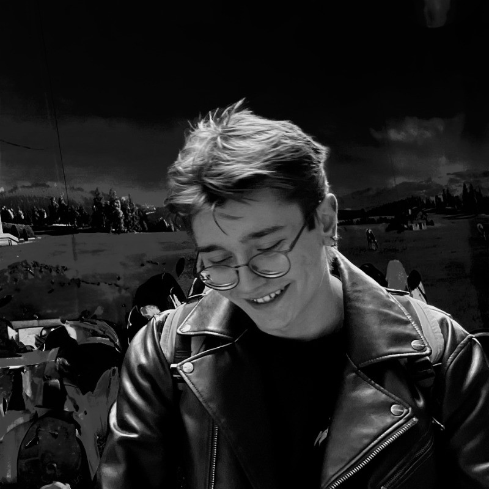

Caster’ı modele katmak
neyi değiştiriyor?
İdeal model ve caster dinamiğini içeren model, aynı ölçülen hareketi ne kadar doğru yeniden üretiyor?
Çıktı / Kalibre edilmiş dijital ikiz01 / MODEL · HAREKET · GERÇEKLİK
Bir mobil robotun dijital ikizi, gerçek hareketini ne kadar iyi anlatabilir? Caster dinamiğini ve daha akıcı hareket profillerini, ölçülebilir kanıtlarla araştırıyorum.
02 / PROGRESS
Hazırlanan planlar, yapılan işler ve doğrulanan sonuçlar. Her biri kendi kanıtıyla.
REPO DEĞİŞİKLİKLERİ / SON 5 COMMIT
03 / VISION
Dijital ikizin değeri, gerçek robotla arasındaki farkı görünür kıldığında başlıyor.
İdeal diferansiyel sürüş modeli hareketi tahrik tekerlekleriyle açıklar. Gerçek robotta ise pasif caster tekerleklerinin yönlenmesi, yuvarlanma direnci ve zemin teması da vardır. Bu çalışma, bu etkilerin ne zaman önemli olduğunu araştırıyor.
Hedefim: aynı komutları, izlenebilir koşullarda modelde ve gerçek robotta karşılaştırmak; daha akıcı hareketin kazanımını ve zaman maliyetini birlikte ölçmek.
İdeal model ve caster dinamiğini içeren model, aynı ölçülen hareketi ne kadar doğru yeniden üretiyor?
Çıktı / Kalibre edilmiş dijital ikizHız ve dönüş profillerini yumuşatmak, kabul edilebilir bir süre artışıyla takip ve yaw hatasını azaltabilir mi?
Çıktı / Bağımsız profil karşılaştırmasıYakın geçmişteki telemetri, kısa vadeli yaw takip hatasını basit tahminlerden daha iyi öngörebilir mi?
Çıktı / Küçük bir tahmin kıyaslamasıDeney matrisi erişime bağlı bir plandır. Hücre başına üç tekrar pratik başlangıç sınırıdır; istatistiksel güç garantisi değildir. Protokolü oku ↗
04 / MANIFESTO
Simülasyon bir beklentidir. Fiziksel doğruluk, bağımsız ölçüm ve karşılaştırma gerektirir.
Erişim eksiklerini, başarısız deneyleri ve modelin sınırlarını görünür tutarım.
Daha karmaşık bir model veya öğrenme yöntemi, ancak ölçülen bir ihtiyacı karşılıyorsa eklenir.
Her sonuç; koşul, parametre, kayıt ve kararla izlenebilir olmalı. Son test verisi ayar yapmak için kullanılmaz.
05 / TASKS
Haftalık görevler ve karar kapıları. Bir görevi açarak çıktısını, kabul ölçütünü ve güncellemelerini inceleyin.
Bu filtreye uygun görev yok. Başka bir durum veya arama deneyin.
06 / ROADMAP
30 Eylül 2026 → 14 Ocak 2027. 252 planlı saat + 32 saat risk rezervi. Saatler gerçekleşen çalışma süresi değildir.
Tüm saatler Europe/Istanbul. Kişisel savunma sırası ders duyurusuna bağlıdır. Resmî takvim ↗
07 / DECISIONS & ACCESS
Platform, veri ve deney erişimi sonuçların sınırını belirler. Talep edilen erişim, onaylanmış erişim olarak gösterilmez.
Platform, CAD, telemetri, test alanı ve yayın izinleri.
İncele ↗02 / KARAR KAPILARIKanıt koşulları, karar tarihleri ve daraltılmış kapsam yolları.
İncele ↗03 / KARAR GEÇMİŞİKarar, gerekçe, yetki ve sonraki adım aynı kayıtta.
İncele ↗08 / LIBRARY
Planlar, yöntemler, raporlar ve kaynaklar. Yayınlanan her belgenin aslı repoda durur.

İSTANBUL / TÜRKİYE09 / ABOUT
Mekanik, yazılım ve arayüzlerin birlikte çalıştığı ürünler tasarlıyorum.
Yeditepe Üniversitesi Makine Mühendisliği öğrencisiyim. Ürün ve UX mühendisliği çalışmalarım; mekanik kısıtları, gömülü sistemleri, prototiplemeyi ve arayüz tasarımını bir araya getiriyor.
Bu ME492 çalışmasını bireysel olarak, danışman gözetiminde yürütüyorum. Buradaki amacım yalnızca bir robot modeli üretmek değil; soruyu, yöntemi, kararları ve sonucu birlikte anlaşılır kılmak.
10 / ADVISOR DESK
Son ilerlemeyi, açık görevleri ve karar gerektiren bağımlılıkları burada inceleyebilirsiniz. Görüş ve soruları ilgili GitHub görevinde kayıt altına alabiliriz.
Sayfa herkese açık okunabilir. GitHub’da yorum yazmak hesap gerektirir. Danışmana otomatik mesaj gönderilmez; şirket dosyaları yalnız açık yayın izniyle paylaşılır.